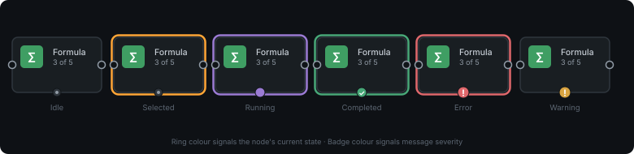

The canvas and nodes¶
The canvas is where you build a workflow. Each box on it is a node (one step: read a file, remove duplicates, write a result). Lines between nodes are edges (the data flowing from one step to the next).
On this page¶
- Add a node
- Connect nodes
- Select, move, copy and delete
- Labels and groups
- Arrange, grid and snapping
- Zoom and move around
- Undo and redo
- Reading the signs on a node
- Menus and shortcuts
- If something goes wrong
Add a node¶
There are three ways. All three put the node where your pointer is, and snap it to the grid when snapping is on.
| Way | How |
|---|---|
| Drag from the palette | The palette is the strip of tabs at the top of the window. Click a tab, then drag a node icon onto the canvas. If you drop it on top of an existing edge, the node is inserted into that edge. |
| Right-click the empty canvas | A searchable menu opens. Type to filter by name, press Enter to take the first match, or open a category and click a node. |
Press Shift+A |
The same searchable menu opens at the pointer. |
The palette tabs are named by what the nodes do:
| Palette tab | Nodes |
|---|---|
| Input | File Input, File Output, Workpaper Output |
| Preparation | Aggregate, Cleansing, Date Helper, Filter, Find and Replace, Formula, Multi-Field Formula, Normalize, Record ID, Rows, Select, Select Records, Sort, Split, Text to Columns, Unique |
| Join | Append, Fuzzy Match, Join, Reconcile, Union |
| Transform | Count, Pivot, Running Total, SQL Query, Transpose, Unpivot, Window |
| Report | Comment, Data Profile, Graph |
| Audit | Benford, Duplicates, Gaps, Risk Filters, Sample |
The palette itself is the authority on what is installed. Workpaper Output is described in workpaper.md.
The right-click menu uses the same groups, except that the first one is called Input/Output. Every node has its own page in the node reference.
To hide or show the palette, use Window > Nodes Toolbar.
Connect nodes¶
Drag from a round socket on one node to a socket on another. Outputs are on the right of a node, inputs on the left.
Rules the canvas enforces (a connection that breaks one simply does not attach):
- An edge always runs from an output to an input. You may start the drag from either end.
- You cannot connect two outputs together or two inputs together.
- You cannot connect a node to itself.
- You cannot create a loop. If the target already leads back to the source, the connection is refused.
- An input accepts one edge. The exception is Union, whose single input accepts any number of edges.
- An output can feed any number of inputs.
Some nodes have several outputs. Duplicates, for example, has three, labelled D (the duplicate rows), U (the unique rows) and S (a one-row summary). The letters beside the sockets tell them apart.
To change how an edge is drawn, right-click it and choose Bezier Edge, Direct Edge or Square Edge. This is only appearance.
To remove an edge, select it and press Del.
A workflow that already contains a loop (for example an older file) still opens, and the app tells you where the loop is. It cannot run until you remove one of the connections in it.
Select, move, copy and delete¶
| To | Do this |
|---|---|
| Select one node | Click it. The Config Dock shows its settings. |
| Select several | Drag a rectangle on the empty canvas, or hold Ctrl or Shift and click nodes. The Config Dock stays empty when more than one node is selected. |
| Move | Drag a node. All selected nodes move together. |
| Copy / Cut / Paste | Edit > Copy (Ctrl+C), Edit > Cut (Ctrl+X), Edit > Paste (Ctrl+V). Copying keeps the connections between the copied nodes. |
| Delete | Edit > Delete or Del. |
Paste works between workflow windows. Pasting something that is not node data (for example ordinary text) is ignored, and the status bar says so.
Copy a group header to copy the whole group with its nodes and the connections between them.
Labels and groups¶
Labels are short notes that float above a node, for example "Customers 2024". They are saved with the workflow.
- Click the text box above a node and type.
Enteror clicking away keeps it,Esccancels. - Or right-click a node and choose Set Label... (an empty label removes it).
- A single node has a checkable Show Label entry. With several nodes selected you get Show Labels and Hide Labels.
- The Config Dock also has a Label row at the top of every node's settings.
A label with no text is never shown.
Groups draw a coloured box around nodes that belong together (for example "Joins" or "Enriched").
| To | Do this |
|---|---|
| Create a group | Select two or more nodes, then press G, or choose Edit > Group selected, or right-click a node and choose Group Selected Nodes. |
| Move a group | Drag its title bar. The nodes inside move with it. |
| Add a node | Drag the node onto the group. |
| Take a node out | Right-click it and choose Detach from Group. |
| Collapse or expand | Press C, or use the + / - on the title bar. Edges that leave the group are drawn to the box while it is collapsed. |
| Rename | Double-click the title bar. |
| Ungroup (keeps the nodes) | U or Shift+G, or Edit > Ungroup. |
| Delete group and nodes | Select the group header and press Del. |
The single-letter shortcuts are ignored while you are typing in a text box.
Arrange, grid and snapping¶
Edit > Arrange tidies the selected nodes without moving them somewhere else (they keep the selection's top-left corner or centre). The same commands are in the right-click menu of a node, under Arrange. A command is greyed out until enough nodes are selected.
| Command | Needs | Default shortcut |
|---|---|---|
| Align Horizontal Centers | 2 nodes | Ctrl+Shift+H |
| Align Vertical Centers | 2 nodes | Ctrl+Shift+V |
| Distribute Horizontally | 3 nodes | none |
| Distribute Vertically | 3 nodes | none |
| Arrange in Row | 2 nodes | none |
| Arrange in Column | 2 nodes | none |
| Arrange in Grid | 2 nodes | none |
| Snap Selection to Grid | 2 nodes | none |
| Snap to Grid (a check mark, not a command) | none | none |
You can change the shortcuts in Edit > Settings > Shortcuts (see Preferences).
Snap to Grid makes nodes land on the grid while you drag. Hold Alt while dragging to move a node freely. The setting is on by default and is also in Edit > Settings > Editor (grid size 10 to 100 px, default 20; show or hide the grid; snapping).
Any command that would change nothing does not add an undo step.
Zoom and move around¶
Four round buttons float at the top-left of every workflow window.
| Button (tooltip) | What it does |
|---|---|
| Run workflow / Cancel run | See Running workflows. They share one place: only one is visible at a time. |
| Zoom in | Zoom in one step. |
| Zoom out | Zoom out one step. |
| Fit view | Zoom and centre so that every node is visible (it does nothing on an empty canvas). |
Ctrl + mouse wheel also zooms. The plain wheel scrolls the canvas up and down, Shift + wheel scrolls it sideways, and dragging with the middle mouse button pans. The status bar shows the canvas coordinates under the pointer.
When you zoom far out, the canvas can draw simpler nodes to stay fast. You control this in Edit > Settings > Editor > Rendering (see Preferences). It affects drawing only, never your data.
F11 toggles full screen.
Undo and redo¶
Edit > Undo (Ctrl+Z) and Edit > Redo (Ctrl+Shift+Z) work on a timeline of the last 200 steps per workflow. The menu names the step, for example "Undo Node label changed", so you can see what you are about to reverse.
What counts as one step:
| Action | Steps |
|---|---|
| Creating, moving, connecting or deleting nodes | One step each action. |
| Changing a setting in the Config Dock (a checkbox, a drop-down, a chosen column) | One step, named after the change. |
| Typing in a text box | A burst of typing is one step. Undo returns to what the box held before you started typing. |
| Adding a rule, section or mapping row | One step per click. |
| Aligning, distributing or arranging | One step per command. |
| Setting a label on several nodes at once | One step. |
Things that are not on the timeline: selecting nodes, scrolling, zooming, and running the workflow. Opening a file starts a fresh timeline, so you cannot undo past the moment you opened it.
After an undo, the Config Dock refreshes to show the restored values for the node you have selected.
Reading the signs on a node¶
A node tells you its state in three places: a ring around its body, a round badge on its bottom edge, and a tooltip.

The ring¶
| Ring | Meaning |
|---|---|
| None | The node is idle. |
| Orange | The node is selected (or under the pointer). |
| Purple | The node is running right now (during Run). |
| Green | The node finished during the last Run. It fades about a second after the whole Run succeeds. |
| Red | The node has a problem (it failed, or it cannot be computed). It stays until the problem is fixed. |
Colours come from the active theme, so they may look slightly different in a light theme.
The badge on the bottom edge¶
| Badge | Meaning |
|---|---|
| A small status icon | The node's normal state: up to date, waiting to be recomputed, or invalid. |
| Red "!" | The node has an error. It replaces the normal status icon. Hover the node to read the message. |
| Amber "!" | A warning, or a node that was skipped. |
| Amber "!" with the tooltip "Changes pending - the node runs when you click away" | The yellow changes not run yet mark. See below. |
"Changes not run yet" (the yellow mark)¶
When you change a setting in the Config Dock, the new value is stored at once (and is saved and undoable), but most nodes do not recompute on every keystroke. Instead the node shows the yellow "!" until you leave it: select another node, click the empty canvas, or close the window. At that moment the node recomputes on the live sample and the mark disappears. Save and Run do not need you to leave the node first: they pick up the current settings themselves.
Data Profile and Comment are the exceptions: they update straight away.
The tooltip¶
Hover a node with a red or amber badge to read a short message: which node, what is wrong, the first sentence of the detail, a suggested fix, and the error code such as TD-SCH-001. The same problem is listed in the Logs dock. See Errors and problems.
Menus and shortcuts¶
The menu bar sits in the title row of the window.
| Menu | Entries |
|---|---|
| File | New (Ctrl+N), Open (Ctrl+O), Open Recent, Save (Ctrl+S), Save As... (Ctrl+Shift+S), Exit (Ctrl+Q) |
| Edit | Undo, Redo, Cut, Copy, Paste, Delete, Group selected, Ungroup, Collapse/Expand group, Arrange (submenu), Settings |
| Window | Nodes Toolbar, Show Logger, Data Preview (Ctrl+Shift+D), Problems, Run History, Node Configuration, Save Current Layout, Reset Layout, Close, Close All, Tile, Cascade, Next, Previous, and a list of the open workflows |
| Help | About |
Other keys on the canvas:
| Key | Action |
|---|---|
Shift+A |
Open the add-node menu at the pointer |
G, U / Shift+G, C |
Group, ungroup, collapse or expand groups |
Del |
Delete the selection |
Ctrl+Shift+T |
Write the run statistics (runs, total and average time) to the Logs |
Ctrl+Shift+R |
Reset those statistics |
F11 |
Full screen |
Workflows open as tabs in the middle of the window. Close a tab with its x; if it has unsaved changes the app asks whether to save, discard or cancel. If a save fails (for example the folder is read-only or the disk is full), a Save failed dialog shows the reason, the status bar says the changes are not saved, and the tab stays open with its unsaved changes.
If something goes wrong¶
| Symptom | What to do |
|---|---|
| The edge snaps back when I drop it | You broke a rule: output to input only, no loop, one edge per input (except Union). Try the other direction, or check for an existing edge on that input. |
| A node has a red ring and a red "!" | Hover it, or open the Logs dock. See Errors and problems. |
| A node shows an amber "!" and nothing changed | Click the empty canvas. The "changes not run yet" mark clears when the node recomputes. |
| Paste does nothing | The clipboard does not hold nodes copied from this app. The status bar says "Paste ignored: clipboard does not contain node data". |
| The Config Dock is empty | Select exactly one node. With none or several selected it stays empty. |
| After undo, the dock seems unchanged | Click the node again. The dock normally refreshes by itself; if it does not, tell your administrator. |
| A box labelled Unknown appears | The workflow uses a node this version does not have. Its settings are kept; see Files and formats. |